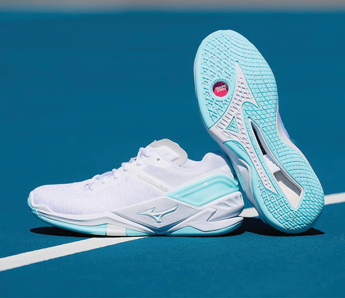

and weighs 400 g - 450 g. The standard netball is size four (4) for players below 10 years old, and size five (5) for players above 10 years old.
Netball shoes
Netball shoes are non-slip sports shoes that are designed to handle severe side-to-side movements that players make on the netball court, Figure 14. They are made of rubber soles designed to provide stability, better grip, and easy pivots keeping the foot on the platform and protecting players from slipping.

Player bibs
In netball player bibs are used to identify each player’s position on the court. They are sleeveless vests with bold letters printed on the front and back to indicate the player’s role, as shown in Figure 1.5. Bibs are worn over the uniform to help teammates, opponents, and officials recognise players and their positions easily during the game.